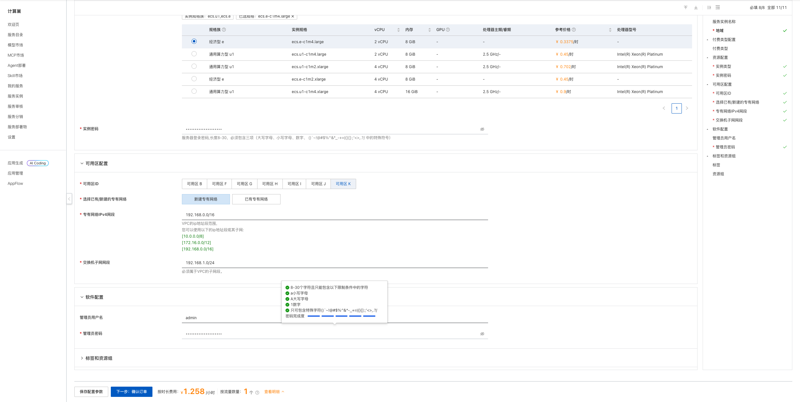
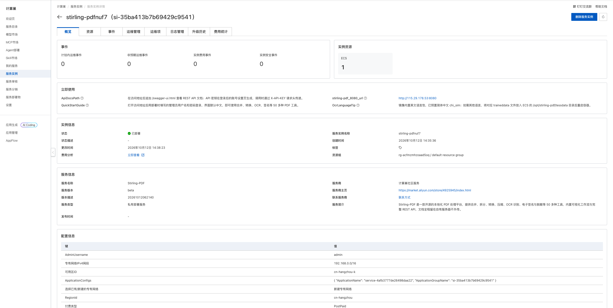
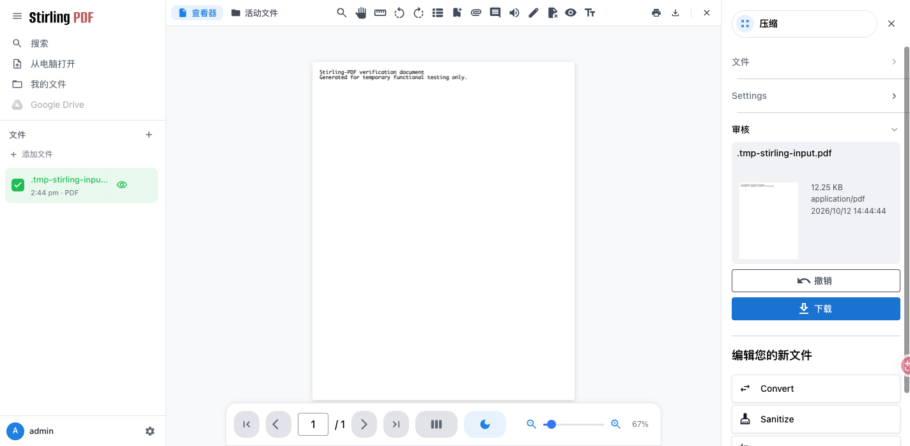

Stirling-PDF 计算巢部署文档
概述
Stirling-PDF 是开源的自托管 PDF 处理平台，提供合并、拆分、转换、压缩、OCR、签名、脱敏和 REST API 等工具。本方案使用官方 Full 镜像，通过 Docker Compose 部署在用户自己的 ECS 中，文件处理和应用数据不需要上传到第三方 PDF 网站。
| 项目 | 说明 |
|---|---|
| 服务 ID | service-4afb3777de26498daa22 |
| 部署形态 | 单台 ECS + Docker Compose |
| 应用镜像 | stirlingtools/stirling-pdf:latest |
| 访问端口 | 8080（Web UI 与 REST API） |
| 数据存储 | ECS /opt/stirling-pdf |
| 数据库 | 内嵌 H2，无需外接数据库 |
| 实测部署耗时 | 约 3 分钟 |
部署步骤
1. 打开创建页面

2. 配置部署参数
| 参数 | 说明 | 建议 |
|---|---|---|
| 服务实例名称 | 控制台中用于识别本次部署 | 保持默认或自定义 |
| 地域、可用区 | ECS 所在位置 | 选择接近使用者且有库存的地域和可用区 |
| 付费类型 | 按量付费或包年包月 | 测试使用按量付费 |
| 实例类型 | ECS 规格 | 2 vCPU / 8 GiB 起 |
| 实例密码 | ECS 登录密码 | 使用符合页面规则的强密码 |
| 专有网络 | 新建或复用 VPC | 首次部署可选择新建 |
| VPC/交换机网段 | 网络地址范围 | 无冲突时保持默认 |
| 管理员用户名 | Stirling-PDF 登录用户名 | 默认 admin，也可自定义 |
| 管理员密码 | Stirling-PDF 首个管理员密码 | 使用独立强密码 |
管理员凭据只在应用首次初始化、用户表为空时生效。请勿使用上游默认密码，也不要将密码写入文档或代码仓库。
填写完成并看到询价结果后，点击“下一步：确认订单”，核对资源和费用，勾选服务协议并创建实例。
3. 等待部署完成
进入服务实例详情页，等待状态变为“已部署”。本次实测从创建到部署完成约 3 分钟。

“立即使用”区域会显示：
stirling-pdf_8080_url：应用访问地址；QuickStartGuide：登录与使用说明；ApiDocsPath：REST API 文档与 API Key 使用说明；OcrLanguageTip：OCR 语言包说明。
4. 登录并使用
打开 stirling-pdf_8080_url，未认证访问会跳转到 /login。使用部署时填写的管理员用户名和密码登录，即可从工具面板选择 PDF 工具。
发布前实测已完成以下验证：
- 上传一份单页 PDF；
- 选择“压缩”工具并执行；
- 结果页正常显示输出文件；
- 下载结果为有效 PDF 文件。

REST API 文档位于 /swagger-ui.html。API Key 需登录后在账号设置中生成，并通过 X-API-KEY 请求头传递。
数据与安全
- 配置和 H2 数据库保存在
/opt/stirling-pdf/configs，日志、OCR 语言包、工作流和自定义文件也持久化在/opt/stirling-pdf下。 - 文档在用户自己的 ECS 中处理；删除 ECS 或服务实例前请先备份需要保留的数据。
- 应用启用了登录认证，但默认访问链路为公网 HTTP 8080。生产环境建议限制安全组来源，并配置 HTTPS 反向代理。
- 镜像内置英文 OCR 语言包，并预置简体中文
chi_sim。其他语言可将对应traineddata文件放入/opt/stirling-pdf/tessdata后重启容器。 - SSO/OAuth2 需要 HTTPS，请在 ECS 前配置 Nginx、Traefik 或 Caddy 做 TLS 终止。
资源释放
不再使用时，在计算巢服务实例详情页执行“删除”。删除完成后建议继续确认：
- 服务实例已不存在；
- ROS 资源栈状态为
DELETE_COMPLETE； - ECS、VPC、交换机和安全组均无残留；
- 账单中不再产生相关按量资源费用。
删除服务实例会同时删除 ECS 及其本地数据，请提前导出或备份重要文件和配置。
官方链接
© 2009-2022 Aliyun.com 版权所有